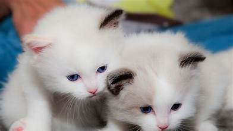
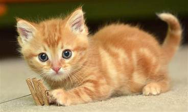
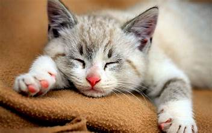

Welcome to Cat Lover's Paradise!




- Cats come in various breeds, each with its unique appearance and temperament.
- Common physical characteristics include a sleek body, retractable claws, sharp teeth, keen senses and a long, flexible tail.
- Cats are known for their independent and solitary nature
- The average lifespan of an indoor cat is around 15 years, but many cats can live into their twenties with proper care.